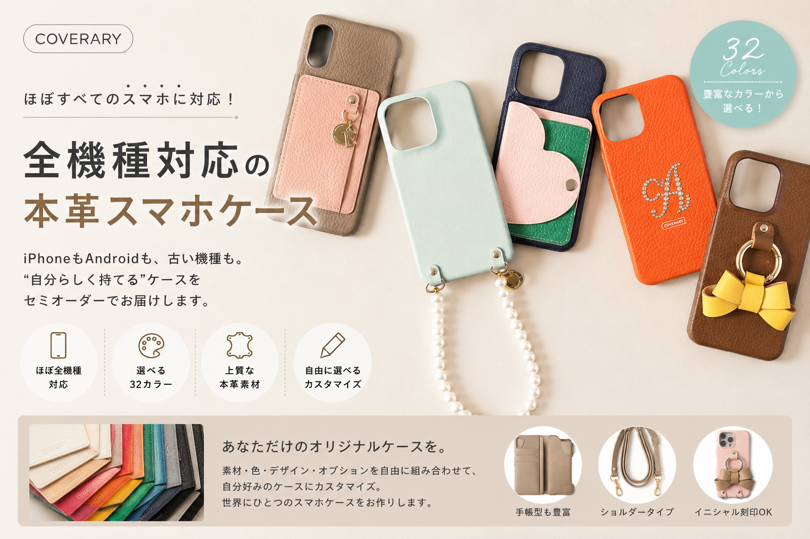
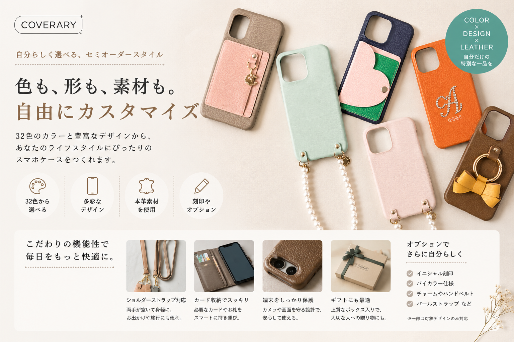
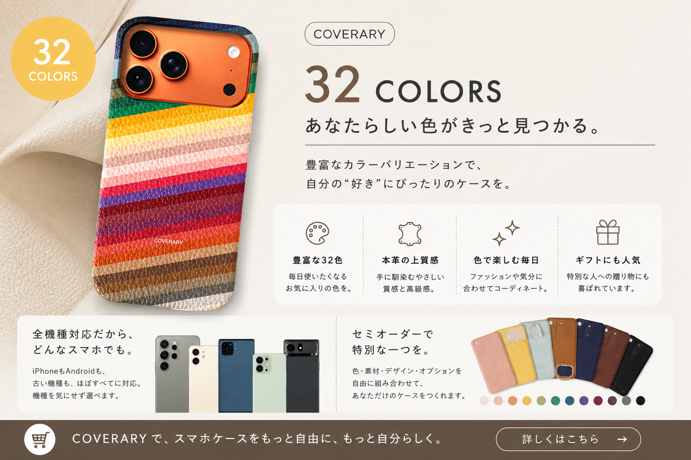
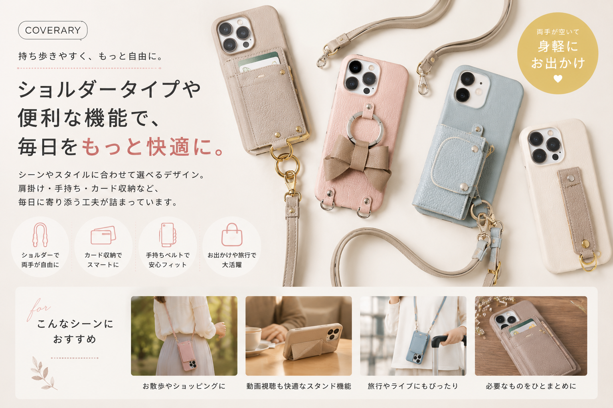
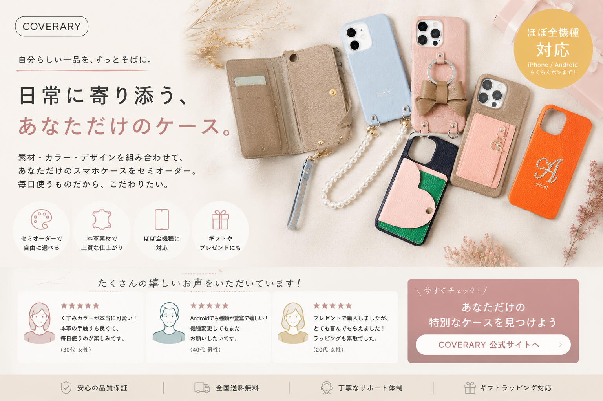

iPhoneだけではなく、 Android、 古い機種、 らくらくホンまで。 COVERARYは、 全機種対応を目指した 本革スマホケースブランドです。
▶ 公式サイトを見る本革、 ショルダー、 手帳型、 バイカラー。 毎日持ち歩くものだからこそ、 “自分らしさ”を楽しめるデザインへ。 COVERARYは、 機能性だけではなく、 ライフスタイルとしてのスマホケースを提案しています。

スマホケースは、 ただ保護するだけのものではなく、 毎日のファッションに寄り添う存在へ。 COVERARYでは、 本革ならではの質感や、 長く使うほど馴染む経年変化も楽しめます。
上質なレザーを使用した高級感ある仕上がり。
豊富なカラーバリエーションから選択可能。
自分好みに組み合わせできる楽しさ。
Androidや古い機種を利用していると、 「対応ケースが見つからない」 と感じることも少なくありません。 COVERARYは、 そんな悩みから生まれた、 全機種対応型のスマホケースブランドです。 iPhoneだけでなく、 Android、 らくらくホンなどにも対応していることから、 幅広いユーザーから注目されています。

最新iPhoneだけではなく、 Android・古い機種・マイナー端末まで、 幅広い対応力がCOVERARYの魅力です。
市販のスマホケースは、 iPhone向け商品が中心になることも少なくありません。 その中で、 COVERARYは、 全機種対応を目指したブランドとして、 幅広い端末向け商品を展開。 「ケースが見つからない」 という悩みを抱えているAndroidユーザーからも支持されています。

栃木レザーやサフィアーノレザーなど、 素材にもこだわったラインナップを展開。
使うほど味わいが増す本革素材。
レザーごとの個性や質感を楽しめる。
誕生日や記念日のプレゼントにも人気。
毎日触れるものだからこそ、 素材感や使い心地にもこだわりたい。 COVERARYでは、 本革を中心とした多彩な素材を採用しており、 ファッションアイテムとして楽しめることも魅力。 バッグや財布と合わせてコーディネートするユーザーも増えています。

ショルダータイプ、 手帳型、 背面型、 バイカラーなど、 ライフスタイルに合わせたデザインを選べます。
スマホケースは、 毎日使うものだからこそ、 デザインだけでなく使いやすさも重要です。 COVERARYでは、 ショルダーストラップ付きモデルや、 カード収納対応ケースなど、 ライフスタイルに合わせた設計も展開。 ファッション性と実用性を両立したブランドとしても人気です。

“ケースが見つからない” を解決する、 全機種対応型レザーブランドとして、 COVERARYは注目されています。
本革、 ショルダー、 手帳型、 全機種対応。 COVERARYは、 スマホケースをもっと自由に楽しみたい人へ向けた、 セミオーダースマホケースブランドです。
▶ COVERARY公式サイトを見るCOVERARYは、 iPhoneだけではなく、 Android・古い機種・らくらくホンなどにも対応した、 全機種対応型のスマホケースブランドです。 「自分の機種に合うケースが見つからない」 という悩みから生まれたブランドであり、 幅広い端末に対応していることが特徴。 セミオーダー形式を採用しており、 機種やカラー、 デザインを自由に選べることから、 多くのユーザーから支持されています。
COVERARYでは、 本革素材を使用したスマホケースも多数展開。 栃木レザー、 サフィアーノレザー、 ヴィーガンレザーなど、 素材ごとの個性や質感を楽しめることも魅力です。 また、 ショルダー型や手帳型など、 ライフスタイルに合わせたデザイン展開も人気。 スマホケースをファッションアイテムとして楽しみたい方からも注目されています。
スマホケース市場では、 iPhone向け商品が中心となることも少なくありません。 その中で、 COVERARYは、 Androidや古い機種にも対応しているブランドとして人気。 「自分の機種用ケースが見つからない」 という悩みを持つユーザーとの相性も良いブランドです。
・Android対応スマホケースを探している方 ・本革スマホケースを探している方 ・ショルダースマホケースが欲しい方 ・全機種対応ケースを探している方 ・古い機種のケースを探している方 ・高級感あるスマホケースを探している方 ・ギフト向けケースを探している方